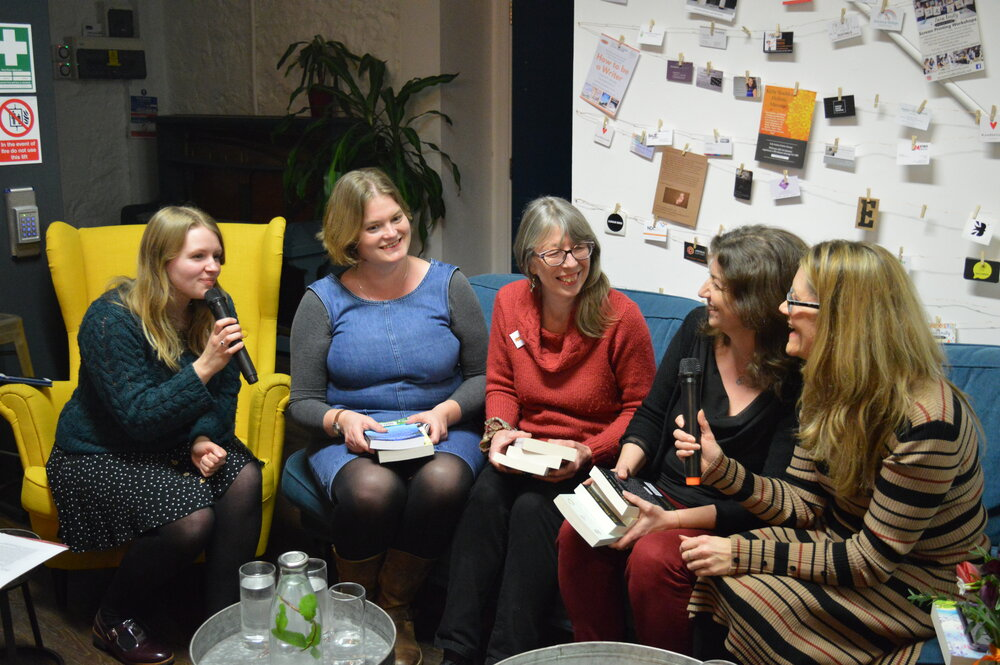
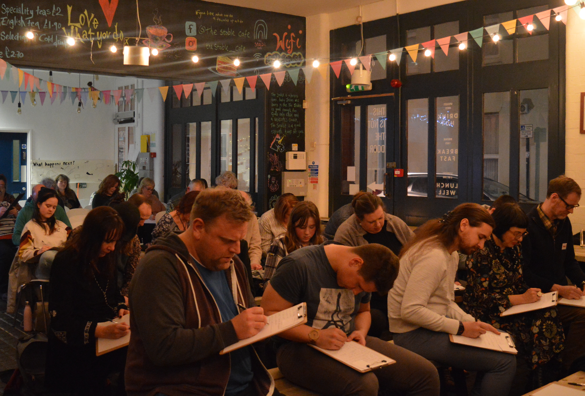

Events
Jasmin regularly hosts author interviews and appears at other events.



Jasmin regularly hosts events as part of her work with Weston Writers' Nights, and has interviewed a variety of authors and publishing professionals including Melanie Golding, Joanna Nadin, Yasmin Rahman, Hellie Ogden and Kesia Lupo.
She is also the editor of A Spot of Writing Magazine, published by Weston Writers' Nights, and has facilitated writing workshops on themes including dystopian fiction and idea generation.
In 2020, Jasmin was invited to take part in Weston-super-Mare's virtual literary festival, where she was interviewed by former LBC radio presenter, Becky Walsh.